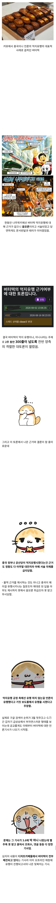

버터떡 기사가 생각보다 안 나왔었네

버터떡 기사가 생각보다 안 나왔었네
중국이든 일본이든 미국이든 간에 애초에 맛이 있어야하고 적당한 가격에팔려야 유행을 떠나서 잘 팔리고 입소문 나는거지 ㅋㅋㅋ 두쫀쿠야 쩔수지만 버터떡은 별로임 , 개인적으로 두쫀쿠도 졸라맛 없었음
두쫀쿠는 2번먹고 안먹음
카쫀쿠는 쌓아두고싶은데 ㅠㅠ
버터떡은 커피마실때 팔면 종종먹음
개좆도 맛대가리 없었던 억지유행임
중국이 관여했다는건 음모론이여도
버터떡은 ㅈㄴ 억지유행 맞음
카페했었는데 버터떡 인스타에 갑자기
많이 올라오기 시작하자마자 버터떡 만드는
업체 영업사원 찾아왔었음ㅋㅋㅋ
애초에 진짜 유행은 쩐다 아니다로 싸우다 말지
이딴토론 안열림.
뭔가 버터떡은 만들기 쉬운가봄 저렴하고 여기저기 팔아서 그냥 보이면 사먹기 나쁘진 않음
파운드 케이크나 마들렌에서 밀가루 대신 찹쌀 가루 넣은 수준이라서 쉽지
설탕 버터 계란 우유야 베이킹이나 디저트 만들때 어차피 소모하는 필수품이고 거기에 찹쌀가루만 더 추가해서 만든 다음 반죽섞고 그냥 빵 처럼 굽기만하면됨
한국 잠깐 갔을때 버터떡 사먹어보니까 말린떡?같은 식감이라 맛없던데..
버터떡은 인기에 비해 인지도가 좆되긴 함
커뮤 글 댓글 바이럴은 티가 안나니까 거기서 조작이 들어갔을 수도 있지
다른건 모르겠고 피자설기는 궁금하더라 오늘 개드립에서 처음 봤음
실제 유행을 해야 유행인지 아닌지를 판단하는데, 유행하지도 않는걸 억지유행이라고 하니까 논란이 생긴거지
커뮤니티에 많이 퍼날라진거지 기사가 많이난게 아니었네
디저트 만드는 가게들이 버터떡에 대해서 초창기에 하는 말이, 그게 뭔데 씹덕아 스탠스였음
애초에 레시피도 불명, 버터떡이라는 어원도 불명이라서 굉장히 이상했음
두쫀쿠를 포함한 모든 유행과 밈은 시작점이 명확한데 버터떡은 갑자기 스럽긴 했음
중국발인지 어쩐지는 모르겠는데 유행의 시작이 굉장히 이상했음
ㅇㅇ 뭔가 유행한다고 자기들도 만들어본다고 하는데 정작 그게 뭔지몰라서 이게 맞는 맛인지 모르겠다는 카페사장들 존나 많았음
먹어봤을때 기분으론 유행할 그런급은 아니였음 그냥 기름떡느낌
아무도 모르면 그게 억지유행임 q.e.d
이거 맛있다 하고 퍼진거면 너도나도 맛있다고 올리는데
난 버터떡을 갑자기 여러명이 이거 맛있다 올린순간 부터 봐서 ㅋㅋㅋ
맛 없고 중티남. 차라리 전병을 팔면 약소합디다만 제 성의표십니다 하고 정청드립이라도 치지
근데 존나 맛없더라
나는 버터떡 이마트 베이커리코너에서 파는거만 먹어봤는데 맛있던데 ㅋㅋㅋ
탕후루 요아정 두쫀쿠 뭐이딴게 다 여초발 호들갑 유행아니겠냐 실제로 남자애들끼리 저거먹자한적은 단한번도 없고 여자 있는자리만 먹게되던데
그것들은 실제로 먹으면 맛이있다
먹으면 왜먹는줄은 알겠다 하고 끄덕여짐
탕후루 요아정이 맛있진 않던데 차라리 버터떡은 그냥 무난한 디저트네 싶었는데
맛있다는데서 나오자마자 먹어야 맛있대서 먹었는데
너무 달음 그리도 두개이상 먹기 쉽지않음
그리고 그정도로 나오자마자 먹으면 공장빵도 존나 맛있음
두쫀쿠는 처음먹었을 때 바로 납득했었거든
그래서 그냥 아 존나 억지로 유행 만들어서 팔아먹는구나 라는 생각이 곧바로 떠오름
일종의 반감 바이럴임
비슷한 사례로 중국에서 유행한 '한국이 공자를 한국사람이라고 한다'가 있음
맛있긴 하던데
두쫀쿠에 비하면 저렴하고 스테디하게 오래갈만한 맛이긴 했음
물론 막 무조건 찾아먹어야 된다 이건 절대 아니고
버터쩍개좃같은맛이었는디 3군데에서 먹었는디 다별로
버터떡이 억지유행 주장에 갑자기 왠 중국..?
난 걍 순수하게 맛없어서 이딴게 어떻게 유행? 이라고 생각했는데
첨에 '상하이 버터떡'이라고 돌았어서 그런 모양
그런게 있었군
실제로 상하이 후기가 리트윗되면서 시작됐다는 분석도 있더라
https://info-161.tistory.com/entry/%EB%B2%84%ED%84%B0%EB%96%A1-%EB%AD%94%EC%A7%80-%EB%AA%A8%EB%A5%B4%EB%A9%B4-%EC%9D%B4%EB%AF%B8-%EB%8A%A6%EC%97%88%EB%8B%A4-%E2%80%94-2026-%EB%94%94%EC%A0%80%ED%8A%B8-%ED%8A%B8%EB%A0%8C%EB%93%9C-%EC%B4%9D%EC%A0%95%EB%A6%AC-CU%C2%B7%ED%8C%A8%EC%85%98%ED%8C%8C%EC%9D%B4%EB%B8%8C%C2%B7%EC%9D%B4%EB%94%94%EC%95%BC-%EC%B4%9D%EB%A7%9D%EB%9D%BC?utm_source=chatgpt.com
근데 뭐 잘팔렸어 생각보다 ㅋㅋ 금방 치고 빠지긴 했는데
버터떡 가격도 그렇고 그냥저냥 먹을만하던데, 이마트 가니까 팔길래 먹어봄
난 버터떡 걍 만쥬변형 제 34호 그정도수준이었고, 그돈으로 소금빵 사는게 나았음
카페 사장(자영업자)들은 간만에 물들어 왔다고 신나서 두쫀쿠 팔다가 인기 시들해질거 같으니 대체재로 버터떡 찾아서 이거다!! 하고 불 지피고 이슈에 눈돌아간 언론은 본격적 유행 시작되기도 전에 받아적은거고
여기저기서 인싸들 두쫀두쫀 거리는거 꼴봬기 싫었던 씹찐들은 괜히 피해의식 근들갑 발동해서 <<억지유행>> 하지마라고 염병 떤 사건
아니었어?
커뮤에서 욕했지만 정작 바이럴은 커뮤에서 한 거였냐고ㅋㅋㅋㅋㅋㅋ
근데 공산당은 진짜 해도해도 너무 나간 거 아니냐 ㅋㅋㅋ
그냥 편갈라서 개지랄떤거 기 이상 그 이하도 아님
문제는 그럼에도 사람들이 얘가 다음 유행이라는 사실은
다 퍼져서 알고있었다는거임
난 두쫀쿠는 좀 맛있게 먹었는데 뭐 파는곳마다 달라서 어떤건 맛있고 어떤건 맛없고..
허니버터칩부터 뭐 유행이라고 하면 질색하던 사람인데
어쩌다 두쫀쿠 선물받고 먹어봤다가 존나 맛있어서 버터떡도 돈주고 사먹어보니까 두쫀쿠만큼은 아니어도 괜찮더라
집근처 떡집에서 피자설기 팔길래 내일 집어올까말까 고민중
난 솔직히 두쫀쿠는 ㅈㄴ 맛있게 잘하는데 찾아서 한때 맨날 주문해서 먹었는데 비싸서 중간에 접음.. 근데 아직도 비싸더라 두쫀쿠는 진자 잘하는데서 먹으면 개맛있음
그냥 먹을만함 그런데 막 품절대란 나고 줄서서 먹을만하냐? 하면 그건 또 아닌거 같음
실제로 인기가 별로였는데 인터넷 글로 노출 되는게 많다고 느껴졌으니까 그렇지
버터떡이라는게 있었어?
있는줄도 몰랐네
그냥 찐따새끼들이 화짱조 음모론 주접떤거지 뭘